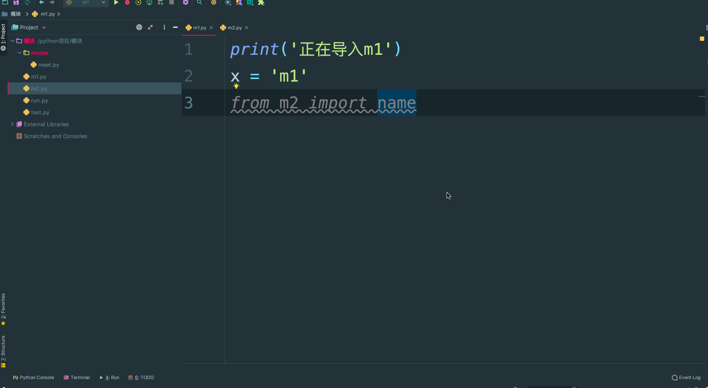

目录
这几天，我们进入模块的学习。在学习模块之前，我们首先要知道，什么是模块？
一个函数封装一个功能，你使用的软件可能就是由n多个函数组成的（先不考虑面向对象）。比如抖音这个软件，不可能将所有程序都写入一个文件，所以咱们应该将文件划分，这样其组织结构要好并且代码不冗余。假如分了10个文件，每个文件里面可能都有相同的功能（函数），怎么办？所以将这些相同的功能封装到一个文件中，那么这个存储着很多常用的功能的py文件，就是模块。 模块就是文件，存放一堆常用的函数，比如：我要在大草原上策马奔腾，应该怎么样？我应该骑马，你也要去浪，你是不是也要骑马。我们说一个函数就是一个功能，那么把一些常用的函数放在一个py文件中，这个文件就称之为模块，模块，就是一些列常用功能的集合体。
从文件级别组织程序，更方便管理, 随着程序的发展，功能越来越多，为了方便管理，我们通常将程序分成一个个的文件，这样做程序的结构更清晰，这时我们不仅仅可以把这些文件当做脚本去执行，还可以把他们当做模块来导入到其他的模块中，实现了功能的重复利用
拿来主义，提升开发效率 同样的原理，我们也可以下载别人写好的模块然后导入到自己的项目中使用，这种拿来主义，可以极大地提升我们的开发效率，避免重复造轮子.
人们常说的脚本是什么？
如果你在终端上编写的代码运行完后,退出python解释器然后重新进入，那么你之前定义的函数或者变量都将丢失，因此我们通常将程序写到文件中以便永久保存下来，需要时就通过python test.py方式去执行，此时test.py被称为脚本script。
所以，脚本就是一个python文件，比如你之前写的购物车，模拟博客园登录系统的文件等等。
Python语言中，模块分为三类。
第一类：内置模块，也叫做标准库。此类模块就是python解释器给你提供的，比如我们之前见过的time模块,os模块。标准库的模块非常多（200多个，每个模块又有很多功能），我们这几天就讲常用的十几种，后面课程中还会陆续的讲到。
第二类：第三方模块，第三方库。一些python大神写的非常好用的模块，必须通过pip install 指令安装的模块，比如 Django,等等。大概有6000多个。
第三类：自定义模块。我们自己在项目中定义的一些模块。
我们先定义一个模块，定义一个模块其实很简单就是写一个文件，里面写一些代码（变量，函数）即可。此文件的名字为test.py，文件内容如下：
print('from the meet.py')
name = '小冯'
def read1():
print('test模块：',name)
def read2():
print('test模块')
read1()
def change():
global name
name = "啦啦"import 翻译过来是一个导入的意思。
模块可以包含可执行的语句和函数的定义，这些语句的目的是初始化模块，它们只在模块名第一次遇到导入import语句时才执行（import语句是可以在程序中的任意位置使用的,且针对同一个模块import很多次,为了防止你重复导入，python的优化手段是：第一次导入后就将模块名加载到内存了，后续的import语句仅是对已经加载到内存中的模块对象增加了一次引用，不会重新执行模块内的语句），如下 import test 只在第一次导入时才执行test.py内代码,此处的显式效果是只打印一次'from the test.py',当然其他的顶级代码也都被执行了,只不过没有显示效果.
import test
import test
import test
import test
import test
# 执行结果：只是打印一次：
from the meet.py重复导入会直接引用内存中已经加载好的结果
1.创建一个以模块名命名的名称空间。
2.执行这个名称空间（即导入的模块）里面的代码。
3.通过此模块名. 的方式引用该模块里面的内容（变量，函数名，类名等）。 这个名字和变量名没什么区别，都是‘第一类的’，且使用test名字的方式可以访问test.py文件中定义的名字，test.名字与test1.py中的名字来自两个完全不同的地方。
每个模块都是一个独立的名称空间，定义在这个模块中的函数，把这个模块的名称空间当做全局名称空间，这样我们在编写自己的模块时，就不用担心我们定义在自己模块中全局变量会在被导入时，与使用者的全局变量冲突。
import tbjx as t
t.read1()#mysql.py
def sqlparse():
print('from mysql sqlparse')
#oracle.py
def sqlparse():
print('from oracle sqlparse')#test.py
db_type=input('>>: ')
if db_type == 'mysql':
import mysql as db
elif db_type == 'oracle':
import oracle as db
db.sqlparse() 我们以后再开发过程中，免不了会在一个文件中，导入多个模块，推荐写法是一个一个导入。
import os,sys,json # 这样写可以但是不推荐
推荐写法
import os
import sys
import json多行导入：易于阅读 易于编辑 易于搜索 易于维护。
from ... import ... 的使用示例。
from test import name, read1
print(name)
read1() 唯一的区别就是：使用from...import...则是将spam中的名字直接导入到当前的名称空间中，所以在当前名称空间中，直接使用名字就可以了、无需加前缀：tbjx.
from...import...的方式有好处也有坏处
好处：使用起来方便了
坏处：容易与当前执行文件中的名字冲突
name = 'oldboy'
from test import name, read1, read2
print(name)
'''
执行结果：
小冯
'''
----------------------------------------
from test import name, read1, read2
name = 'oldboy'
print(name)
'''
执行结果：
oldboy
'''
----------------------------------------
def read1():
print(666)
from meet import name, read1, read2
read1()
'''
执行结果：
test模块： 小冯
'''#测试一：导入的函数read1，执行时仍然回到meet.py中寻找全局变量 'alex'
#test.py
from meet import read1
name = 'alex'
read1()
'''
执行结果:
from the meet.py
meet->read1->name = '郭宝元'
'''
#测试二:导入的函数read2，执行时需要调用read1(),仍然回到meet.py中找
#read1()
#test.py
from meet import read2
def read1():
print('==========')
read2()
'''
执行结果:
from the meet.py
meet模块
meet模块： 郭宝元
'''通过这种方式引用模块也可以对模块进行改名。
from meet import read1 as read
read()from tbjx import read1,read2,name from meet import * 把meet中所有的不是以下划线(_)开头的名字都导入到当前位置
大部分情况下我们的python程序不应该使用这种导入方式，因为*你不知道你导入什么名字，很有可能会覆盖掉你之前已经定义的名字。而且可读性极其的差，在交互式环境中导入时没有问题。
可以使用all来控制*（用来发布新版本），在meet.py中新增一行
__all__=['name','read1'] #这样在另外一个文件中用from spam import *就这能导入列表中规定的两个名字编写好的一个python文件可以有两种用途： 一：脚本，一个文件就是整个程序，用来被执行（比如你之前写的模拟博客园登录那个作业等） 二：模块，文件中存放着一堆功能，用来被导入使用 python为我们内置了全局变量__name__， 当文件被当做脚本执行时：name 等于'main' 当文件被当做模块导入时：__name__等于模块名 作用：用来控制.py文件在不同的应用场景下执行不同的逻辑（或者是在模块文件中测试代码）
if __name__ == '__main__':
print('from the meet.py')
__all__ = ['name', 'read1',]
name = '郭宝元'
def read1():
print('meet模块：',name)
def read2():
print('meet模块')
read1()
def change():
global name
name = '宝浪'
if __name__ == '__main__':
# 在模块文件中测试read1()函数
# 此模块被导入时 __name__ == meet 所以不执行
read1()当你引用一个模块时，不见得每次都可以import到：
当咱们导入同一个目录下的模块的时候就能够使用import成功,不是同一个目录下的导入就会报错

Python中引用模块是按照一定的规则以及顺序去寻找的，这个查询顺序为：先从内存中已经加载的模块进行寻找找不到再从内置模块中寻找，内置模块如果也没有，最后去sys.path中路径包含的模块中寻找。它只会按照这个顺序从这些指定的地方去寻找，如果最终都没有找到，那么就会报错。
内存中已经加载的模块->内置模块->sys.path路径中包含的模块
模块的查找顺序
需要特别注意的是：我们自定义的模块名不应该与系统内置模块重名。虽然每次都说，但是仍然会有人不停的犯错
#在初始化后，python程序可以修改sys.path,路径放到前面的优先于标准库被加载。
import sys
sys.path.append('/a/b/c/d')
sys.path.insert(0,'/x/y/z') #排在前的目录，优先被搜索
# 注意：搜索时按照sys.path中从左到右的顺序查找，位于前的优先被查找，sys.path中还可能包含.zip归档文件和.egg文件，python会把.zip归档文件当成一个目录去处理，
#首先制作归档文件：zip module.zip foo.py bar.py
import sys
sys.path.append('module.zip')
import foo,bar
#也可以使用zip中目录结构的具体位置
sys.path.append('module.zip/lib/python')
#windows下的路径不加r开头，会语法错误
sys.path.insert(0,r'C:\Users\Administrator\PycharmProjects\a')
#至于.egg文件是由setuptools创建的包，这是按照第三方python库和扩展时使用的一种常见格式，.egg文件实际上只是添加了额外元数据(如版本号，依赖项等)的.zip文件。
#需要强调的一点是：只能从.zip文件中导入.py，.pyc等文件。使用C编写的共享库和扩展块无法直接从.zip文件中加载（此时setuptools等打包系统有时能提供一种规避方法），且从.zip中加载文件不会创建.pyc或者.pyo文件，因此一定要事先创建他们，来避免加载模块是性能下降。